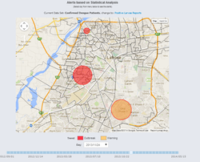

Predicting Individual Level Mobility Timelines Using Sparse Location Data from Social Media
Social media provides a valuable opportunity to study multiple aspects of an individual, coupled with their mobility. To do so, continuous measures of mobility are useful but the sparse nature of social media presents a challenge. While recent developments in mobility prediction models have largely focused on using temporally-rich data sets such as GPS trackers or Call Data Records, they are not optimized for geo-located social media due to its sparse nature. Simultaneously, social media geo-inference models have optimized for predicting geo-location of individual posts, and not filling in entire movement timelines. Accordingly, we propose a stochastic framework, Intermediate Location Computing (ILC), which combines approaches from several existing mobility prediction methods, to predict every missing location from an individual's social media timeline. We compare ILC with several state-of-the-art approaches. For three major cities, ILC predicts at 1 and 2-hour resolution with up to 86% accuracy, 19% better than compared methods. This work presents a new algorithm to predict practical and continuous individual-level mobility patterns with sparse but readily available social media data.
Using Big Data to Compare the Effect of Localized Dengue Vector Control Interventions
Dengue virus causes over 96 million cases worldwide per year and is expanding rapidly in geographic range. Containment activities are an essential part of reducing the public health burden caused by dengue, but systematic evidence on comparative efficacy from the field is difficult to obtain. We combine 4.8 million data points from the world’s largest dengue containment monitoring system with confirmed case data from the local government hospital system to estimate the efficacy of seven different containment activities in two cities during years of high dengue activity in Pakistan. Specifically, we use a modified version of the time series Suspected Infected Recovered framework to estimate how the reproductive number, R0,of the outbreak changed in relation to deployment of each containment activity. Further, we estimate the spatial dependence of cases based on deployment of each containment activity. Both methods indicate a lack of evidence for the efficacy of fish seeding, which is also consistent with findings from other settings. In drawing conclusions regarding efficacy of activities from observational data, this study also allows for recommendations on deploying such systems going forward, to be able to optimally learn lessons under limitations of the pragmatic nature of containment activity deployment.
Using Propensity Score Matching to Understand the Relationship Between Online Health Information Sources and Vaccination Sentiment
There has been a strong rise of anti-vaccine sentiment in recent years. Human Papilloma Virus (HPV) vaccine has been particularly affected, and the effect of information campaigns from public health institutions, which is a modifiable intervention, is important. However, simply comparing sentiment and information sources via correlation is inadequate because there are underlying factors that could be connected to vaccination rates. Here we study the connection between HPV vaccination sentiment and information from “vetted” public health sources in a causal manner using propensity score matching. We control for factors known to be related to vaccination rates in the offline world using online metrics of language, location and network size. We find that following selected vetted source leads to a decrease in polarized sentiment on HPV vaccination. Further, we find that following a vetted source on Twitter results in a larger decrease in negative sentiment compared to positive sentiment.
Read our paper (link)
Fine-grained Dengue Forecasting using Telephone Triage Services
Thousands of lives are lost every year in developing countries for failing to detect epidemics early because of the lack of real-time disease surveillance data. We present results from a large-scale deployment of a telephone triage service as a basis for dengue forecasting in Pakistan. Our system uses statistical analysis of dengue-related phone calls to accurately forecast suspected dengue cases 2 to 3 weeks ahead of time at a subcity level (correlation of up to 0.93). Our system has been operational at scale in Pakistan for the past 3 years and has received more than 300,000 phone calls. The predictions from our system are widely disseminated to public health officials and form a critical part of active government strategies for dengue containment. Our work is the first to demonstrate, with significant empirical evidence, that an accurate, location-specific disease forecasting system can be built using analysis of call volume data from a public health hotline.
Read our paper (link)
FluBreaks
We performed the first detailed algorithmic analysis of how Google Flu Trends can be used as a basis for building a fully automated system for early warning of epidemics. We explored the relative merits of three types of algorithms: normal distribution algorithms, Poisson distribution algorithms, and negative binomial distribution algorithms, and related our findings to changes in Internet penetration and population size of the regions for which Google Flu Trends provided data. Based on our work, we developed FluBreaks, an early warning system for flu epidemics using Google Flu Trends. We published our findings in Journal of Medical Internet Research (JMIR). Read our paper (link)
Dengue Early Epidemic Detection System for the Punjab Government

By leveraging a combination of supervised and unsupervised machine learning techniques, and using GPS tagged dengue patients and larvae sightings reports, and weather indicators as data sources, I developed a spatio-temporal early epidemic detection system to identify potential hotspot for dengue spread. The system to is used by the government officials on a daily basis to allocate work force to clean the high alert areas of potential dengue spread.
Characterizing Dengue Spread and Severity using Internet Media Sources
This project aims to build a system that automatically aims to characterize the spread and severity of the dengue disease at a fine-grained location granularity based on analyzing news reports from Internet media sources. Our system leverages a range of standard data mining and machine learning techniques to arrive at an accurate dengue severity measure for any given location. Based on a detailed analysis of news reports gathered from several leading dailies in Pakistan, we demonstrate the effectiveness of our system to accurately characterize the dengue spread and severity across different locations within Pakistan. Our finding were accepted as a poster in Proceedings of the 3rd ACM Symposium on Computing for Development(DEV). Read our paper (link)